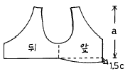
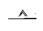

한복산업기사 (2003-08-31 기출문제)
1과목: 복식의장 및 한국복식문화사
1. 깨끼치마의 조끼허리(여아 조끼허리) 치수 중 a 부분의 치수로 맞는 것은?

- 저고리 길이 - 1cm
- 저고리 길이 - 4㎝
- 저고리 길이 + 1㎝
- 저고리 길이 + 2㎝
(정답률: 알수없음)

2. 디자이너가 자신의 아이디어를 표현하기 위하여 활용하는 자원을 무엇이라고 하는가?
- 디자인 요소
- 디자인 목표
- 디자인 실제
- 디자인 원리
(정답률: 알수없음)
3. 재질이 특이한 옷감으로 디자인 하고자 할 때 좋은 방법은?
- 디테일을 정교하게 구성한다.
- 선과 형을 단순하게 처리한다.
- 트리밍을 사용하여 강조점을 구성한다.
- 채도가 높은 색채를 선택한다.
(정답률: 알수없음)
4. 복식의 기원 중 Maslow 의 욕구 수준상 가장 낮은 단계에서 비롯된 것은?
- 심리적 보호 욕구
- 생리적 욕구
- 정숙성의 욕구
- 장식 욕구
(정답률: 알수없음)
5. 원시인의 신체 장식방법 중 피부의 상처에 남는 흉터를 이용한 장식방법을 무엇이라 하는가?
- 변형
- 문신
- 상흔
- 전족
(정답률: 알수없음)
6. 명도의 표시법 중 순수한 회색(중성색)의 표시 기호는?
- G
- R
- Y
- N
(정답률: 알수없음)
7. 복식의 도구적 기능과 관계가 먼 것은?
- 신체보호와 심리적 보호
- 물리적 기능
- 사회적 기능
- 자기 표현
(정답률: 알수없음)
8. 한복의 재질면으로 본 특색이 아닌 것은?
- 한복의 옷감은 무늬와 질감이 우리 옷의 아름다움과 조화를 이루었다.
- 한복의 옷감은 형태의 변화가 적은 한복의 개성을 잘 살려준다.
- 한복의 옷감은 우리나라의 기후 풍토와 생활감정에 조화를 이룬다.
- 한복의 옷감은 기후에 크게 영향을 받지 않으므로 계절감각은 고려하지 않아도 된다.
(정답률: 알수없음)
9. 복식의 표현적 기능과 거리가 먼 것은?
- 자기 실현
- 신분, 집단 표시
- 자기 표현
- 복식의 전달 수단
(정답률: 알수없음)
10. 군인들이 전쟁을 수행할 때에 적으로부터 신체를 보호하기 위하여 특수한 의복을 착용한다는 내용은 복식의 기원을 설명하는 학술 중 어디에 해당 하는가?
- 정숙성설
- 심리적 보호설
- 신체보호설
- 신체 장식설
(정답률: 알수없음)
11. 조선왕조 때 포의 종류로 중국 복제의 영향을 받아 우리 고유의 융복으로서 가능한 옷의 명칭은?
- 철릭
- 도포
- 창의
- 주의
(정답률: 알수없음)
12. 개화기에 새롭게 등장한 남자의 머리 형태는?
- 하이칼라 머리
- 상투 머리
- 정자관
- 흑립
(정답률: 알수없음)
13. 조선시대의 두식에 관한 설명 중 틀린 것은?
- 미혼녀는 땋은 머리를 하였고 기혼녀는 얹은 머리, 쪽진머리를 하였다.
- 수식에는 비녀, 떨잠, 첩지, 뒤꽂이 등이 있다.
- 비녀, 뒤꽂이는 쪽진머리에 사용하는 수식이다.
- 대수는 궁중에서 의식 때 하던 머리모양으로 어여 머리 위에 떠구지라는 나무로 만든 큰머리를 얹어 놓은 것이다.
(정답률: 알수없음)
14. 조선시대의 노리개에 대한 설명 중 옳지 않는 것은?
- 저고리의 겉고름, 안고름 또는 치마허리에 찬다.
- 계절이나 재료, 크기에 따라 패용하는 위치나 사용 방법이 다르다.
- 장식적인 의미외에 실용적인 면으로도 사용하였다.
- 매듭은 홍, 남, 녹이 기본색이다.
(정답률: 알수없음)
15. 삼국시대 치마의 특성을 가장 잘 설명한 것은?
- 폭이 좁고 경쾌한 모양의 치마
- 폭이 넓고 땅에 끌리도록 긴 치마
- 폭이 넓고 스란단을 댄 중후한 치마
- 허리에서 아랫단 끝까지 주름을 잡은 치마
(정답률: 알수없음)
16. 족두리, 도투락 댕기를 착용하기 시작한 시기는?
- 삼국시대
- 고려시대
- 통일신라시대
- 조선시대
(정답률: 알수없음)
17. 조선시대 배자의 종류에 속하지 않은 것은?
- 원삼
- 사규오자
- 두루마기
- 요즘의 배자
(정답률: 알수없음)
18. 한국인의 백의 선호사상에 대한 설명으로서 맞지 않는 것은?
- 상례와 제례의 기간이 길었다.
- 오방사상에서 백의를 입는 것이 국운에 좋았다.
- 직물을 짠 그대로의 색을 즐겨 사용하여 인공을 배재하고 자연을 즐겼다.
- 백의는 민족의 청결하고 순결한 심성을 드러낸다.
(정답률: 알수없음)
19. 혼례복으로 사용되는 활옷의 경우 다홍색 바탕에 다음과 같은 수를 놓는다. 그것이 의미하는 바가 바르게 설명된 것은?
- 연화문 - 자손번창
- 모란문 - 길상, 불사초
- 운문 - 부귀, 고귀함
- 봉황문 - 덕(德), 인(仁), 신(信), 정(正)
(정답률: 알수없음)
20. 반가에서 입었던 예복이 아닌 것은?
- 원삼
- 활옷
- 당의
- 적의
(정답률: 알수없음)
2과목: 한복구성학
21. 다음 중에서 키가 크고 뚱뚱한 사람의 저고리를 만들 때 잘못된 것은?
- 깃은 조금 길고, 섶은 넓지 않게
- 뒷 도련은 둥글지 않게
- 저고리 길이는 짧지 않게
- 배래통은 넓지 않게
(정답률: 알수없음)
22. 남자 마고자를 바느질 하는 방법 중 바르지 못한 것은?
- 등솔박기는 뒷길의 겉과 겉을 마주대고 등솔선을 맞추어 시침한 후 박는다.
- 어깨박기는 앞길과 뒷길의 겉을 마주대고 진동선에서 고대점까지 박는다.
- 섶달기에서 시접은 길쪽으로 꺽어 다림질한다.
- 배레와 옆선박기에서 시접은 안감쪽으로 꺽고 다림질하여 도련으로 뒤집는다.
(정답률: 알수없음)
23. 남자 한복 바지를 제도할 때 바지통과 바지부리의 치수가 맞는 것은?
- H/4, H/2 +3
- H/3, H/4
- H/2, H/4 +3
- H/4, H/2
(정답률: 알수없음)
24. 남아 저고리의 돌띠 길이로 가장 적당한 것은?
- 70 cm
- 80 cm
- 60 cm
- 85 cm
(정답률: 알수없음)
25. 다음은 풍차바지에 대한 설명이다.틀린 것은?
- 사폭과 마루폭은 박아 사폭 쪽으로 꺽는다.
- 큰사폭과 작은 사폭은 박아 큰사폭 쪽으로 꺾는다.
- 작은 사폭과 큰 사폭이 앞에만 있고, 뒤에는 없는 바지이다.
- 마루폭과 밑은 박아 가름솔로 꺽는다.
(정답률: 알수없음)
26. 무명 적삼의 배래 솔기는?
- 홑솔
- 곱솔
- 쌈솔
- 통솔
(정답률: 알수없음)
27. 다음은 두루마기와 관복의 차이점이다. 해당되지 않은 것은?
- 관복의 무는 두루마기의 2배이다.
- 관복의 깃은 단령이고, 두루마기의 깃은 직령이다.
- 관복의 소매통이 두루마기보다 넓다.
- 긴고름과 짧은 고름이 각각 1개씩 있다.
(정답률: 알수없음)
28. 버선 만들기에 필요한 치수로 묶어진 것은?
- 발등높이, 발길이.
- 발길이, 발나비.
- 발목둘레, 발길이.
- 발높이, 발둘레
(정답률: 알수없음)
29. 견직물에 대한 미싱바늘과 실의 선택이 가장 옳은 것은?
- 바늘 9번에 실 100번사
- 바늘 16번에 실 100번사
- 바늘 14번에 실 50∼70번사
- 바늘 9번에 실 60∼80번사
(정답률: 알수없음)
30. 저고리 치수에서 가장 상호관계가 없는 것은?
- 깃고대와 섶선
- 깃나비와 동정나비
- 품과 진동
- 품과 화장
(정답률: 알수없음)
31. 옷감 다루기에 대한 설명으로 잘못된 것은?
- 안과 겉이 뚜렷하게 나타나지 않는 것은 기호에 따라 선택할 수 있으나 대개 식서에 글자를 제직한 것이 바로 보이는 쪽이 안이다.
- 의복에서 겉감과 안감은 같은 계통의 섬유로서 안감은 겉감보다 얇고 미끄러운 것으로 하여야 한다.
- 색상에 있어서는 겉감이 얇아서 안감이 비칠 때에는 같은색 계통의 엷은 색상으로 한다.
- 저고리 앞길의 좌우, 색동소매의 좌우 맞추기, 치마에 무늬를 바로 맞추기 등 마름질할 때 세밀하게 주의를 기울어야 한다.
(정답률: 알수없음)
32. 저고리감과 빛깔에 대해 잘못 말한 것은?
- 저고리감에는 면직, 마직, 견직, 합성섬유등 여러가지가 있으나 계절, 용도, 취미에 맞추어 적당히 선택해야 한다.
- 고급옷감은 특별한 경우가 아니면 아껴 입고 일상복에서는 실용적인 옷감을 사용하도록 한다.
- 저고리감의 질감은 빳빳한 것보다 부드러운 것이 저고리 선이 명확히 나타난다.
- 저고리감의 색상은 얼굴색과 체형, 계절등을 고려해서 잘 선택하도록 한다.
(정답률: 알수없음)
33. 원형 제도에서 다음 기호는 무엇을 표시하는가?

- 늘임의 표시
- 줄임의 표시
- 다트의 표시
- 옷감의 결표시
(정답률: 알수없음)
34. 75cm폭 옷감으로 여자 저고리 마름질법은?
- 길이× 4+ 소매나비× 6 + 시접
- 길이× 2 + 소매나비× 4 + 시접
- 길이× 2 + 소매나비× 2 + 시접
- 소매나비× 4 + 시접
(정답률: 알수없음)
35. 재단시 주의할 점이다. 틀린 것은?
- 원형과 옷감의 방향을 주의한다.
- 원형은 큰 것부터 배열한다.
- 좌우는 따로 재단한다.
- 무늬 옷감은 무늬의 방향이나 위치를 고려해서 재단한다
(정답률: 알수없음)
36. 깃길이는 어떻게 정하는가?
- 겉깃길이 + 안깃길이
- 겉깃길이 + 고대
- 겉깃길이 + 고대 + 겉깃길이 + 깃나비 + 2
- 겉깃길이 + 고대 + 안깃길이 + 6
(정답률: 알수없음)
37. 저고리의 안섶 시접의 방향은?
- 저고리 겉섶쪽이다.
- 길쪽이고 두꺼운 감은 가름솔로 해야한다.
- 홑솔로 해야한다.
- 통솔로 해야 부담이 없다.
(정답률: 알수없음)
38. 새가슴인 경우 저고리를 만들 때 유의할 점은?
- 저고리 기장을 짧게 하고 뒷기장을 1cm 길게 한다.
- 옷 형태와 아무런 관계가 없다.
- 앞기장을 조금 길게 한다.
- 앞기장을 조금 짧게 한다.
(정답률: 알수없음)
39. 솜 저고리의 바느질 순서로서 맞는 것은?
- 등솔 - 어깨솔 - 섶붙이기 - 진동하기 - 겉깃, 안깃달기 - 배래옆솔기하기 - 안만들기 - 안팎끼기 - 도련 - 솜두기 - 부리맞추기 - 뒤집기 - 안깃공그리기 - 옷고름달기 - 시침뜨기 - 동정달기
- 등솔 - 어깨솔 - 섶붙이기 - 진동하기 - 배래옆솔기하기 - 안만들기 - 안팎끼기 - 깃달기 - 솜두기 - 뒤집기 - 옷고름달기 - 시침뜨기 – 동정달기
- 등솔 - 어깨솔 - 섶붙이기 - 진동하기 - 도련그리기 - 안만들기 - 솜두기 - 뒤집기 - 시침뜨기 - 옷고름달기 - 동정달기
- 등솔 - 어깨솔 - 섶붙이기 - 진동하기 - 겉깃 안깃달기 - 안만들기 - 안팎끼기 - 배래옆솔기 도련하기 - 솜두기 - 부리맞추기 - 뒤집기 - 옷고름달기 - 시침뜨기 - 동정달기
(정답률: 알수없음)
40. 여자 동정의 나비는?
- 깃나비의 1/5
- 깃나비의 2/5
- 깃나비의 3/5
- 깃나비의 4/5
(정답률: 알수없음)
3과목: 피복재료학
41. 가슴둘레 56cm 인 어린이의 두루마기의 품은?
- 12cm
- 16cm
- 18cm
- 22cm
(정답률: 알수없음)
42. 원삼을 입을 때 댕기의 겉과 안의 색은?
- 빨강색, 남색
- 주황색, 흰색
- 흑색, 다홍색
- 노란색, 빨강색
(정답률: 알수없음)
43. 바느질 솔기에 대한 설명이 바르게 된 것은?
- 가름솔: 저고리의 진동이나 두꺼운 감의 솔기에 사용된다.
- 통솔: 솔기를 박아서 양쪽으로 가라 눕히는 방법으로 물빨래가 힘든 옷감의 솔기에 사용된다.
- 쌈솔: 모시, 노방 등의 얇고, 비치는 옷감의 솔기에 사용된다.
- 곱솔: 시접을 싸서 눌러 박는 방법으로 홑옷이나 작업복의 솔기에 사용된다.
(정답률: 알수없음)
44. 남자 저고리 참고치수에서(표준체격기준) 저고리 길이는 어느 정도로 하는가?
- 50cm
- 60cm
- 70cm
- 75cm
(정답률: 알수없음)
45. 재봉틀의 박음질은 이 부분의 압력과 톱니의 작용에 의하여 옷감이 밀려나가면서 이루어지게 되는데, 이 부분의 명칭은 무엇인가?
- 노루발
- 풀리
- 윗실조절장치
- 땀수조절다이얼
(정답률: 알수없음)
46. 폴리에스테르 필라멘트사의 길이가 1500m이고, 그 무게가 10g이면 이실의 데니어(D)수는?
- 50 D
- 60 D
- 70 D
- 80 D
(정답률: 알수없음)
47. 다음 중 면섬유가 아닌 것은?
- 옥양목
- 포플린
- 데트론
- 광목
(정답률: 알수없음)
48. 섬유는 결정화도가 증가하면 성질도 변한다. 결정화도가 증가함에 따라 증가하는 것은?
- 유연성
- 강도
- 염색성
- 흡습성
(정답률: 알수없음)
49. 비스코스 레이온의 주원료는?
- 재생털 및 노일
- 린터스 및 목재 펄프
- 부잠사
- 라니탈 스프
(정답률: 알수없음)
50. 무명섬유의 표백 및 염색에서 황산을 사용할 경우 유의해야 할 온도 및 농도는?
- 21℃, 2%
- 50℃, 10%
- 80℃, 10%
- 100℃, 5%
(정답률: 알수없음)
51. 아래의 식물성 섬유 중에서 줄기 섬유(인피 섬유)가 아닌 것은?
- 사이잘마
- 아마
- 대마
- 저마
(정답률: 알수없음)
52. 면 섬유를 수산화나트륨 용액에 담가서 처리한 후 묽은황산으로 중화하여 광택을 증가시키는 가공법은?
- 머서리제이션(mercerization)
- 산아미
- 염소 클로리네이션
- S.R가공
(정답률: 알수없음)
53. 면섬유의 천연꼬임에 대한 설명 중 옳은 것은?
- 천연꼬임은 방적성과 탄성을 가져다 준다.
- 성숙섬유일수록 천연의 꼬임이 적다.
- 섬유가 거칠수록 많다.
- 천연꼬임의 방향은 좌연이다.
(정답률: 알수없음)
54. 습윤되면 강도가 10% 내외로 증가하는 섬유끼리 짝지어진 것은?
- 폴리에스테르, 면
- 면, 인견
- 면, 마
- 폴리에스테르, 폴리프로필렌
(정답률: 알수없음)
55. 섬유의 감별에서 뜨거운 구리선에 섬유를 붙여 가스버너의 산화불꽃을 넣어면 섬유속에 염소가 있다는 것을 알수 있다, 이때 산화불꽃의 색깔은?
- 초록빛
- 노란빛
- 빨강빛
- 보라빛
(정답률: 알수없음)
56. 안전 교육의 3단계에 해당되지 않는 것은?
- 지식 교육
- 기능 교육
- 태도 교육
- 습관 교육
(정답률: 알수없음)
57. 다음 중 1차 구명처치에 해당되지 않는 것은?
- 기도(Air way)
- 호흡(Breathing)
- 순환(Circulation)
- 심전도(E.K.G)
(정답률: 알수없음)
58. 안전제일은 누구에 의하여 제창되었는가?
- Heinlich
- Kelly
- Elkow
- Jhon
(정답률: 알수없음)
59. 방진마스크의 구비조건에서 틀린 것은?
- 흡착제가 좋은 것이어야 한다.
- 제진 효율이 좋아야 한다.
- 흡입저항이 낮아야 한다.
- 무게가 가벼워야 한다.
(정답률: 알수없음)
60. 응급처치를 실시하고자할 때 준수하여야 할 사항이 아닌 것은?
- 생사의 판정을 하여 조치를 취한다.
- 원칙적으로 의약품사용을 피한다.
- 응급처치를 한 후 반드시 의사의 치료를 받도록 한다.
- 인공호흡이나 심폐 소생술 조치를 취한다.
(정답률: 알수없음)